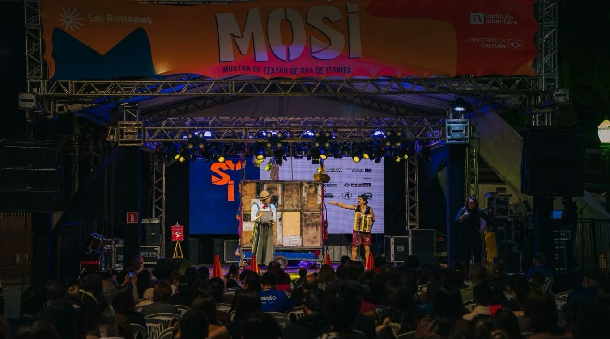
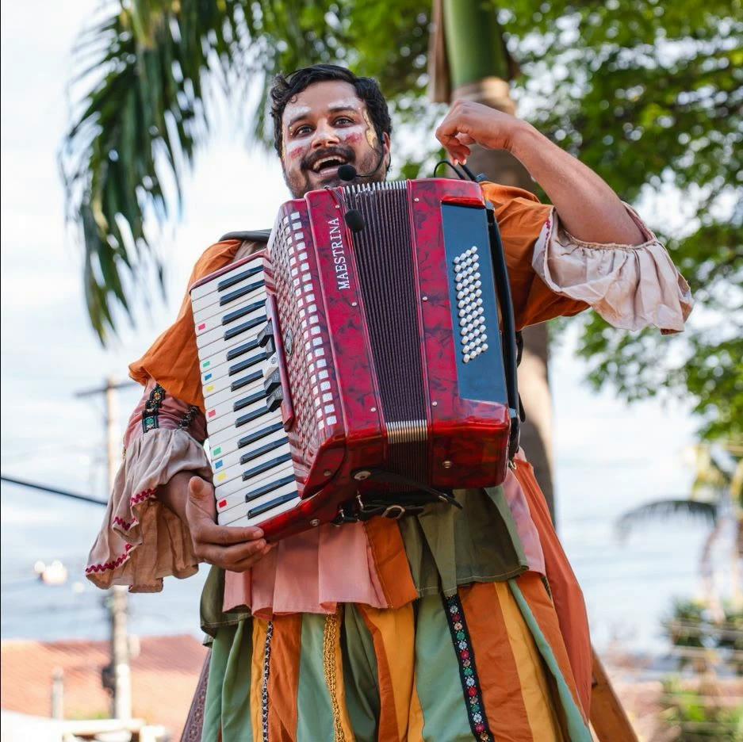
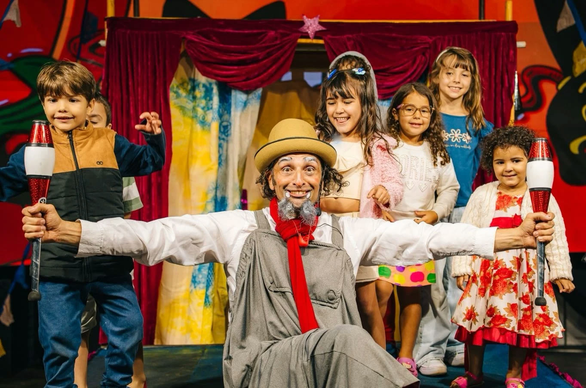
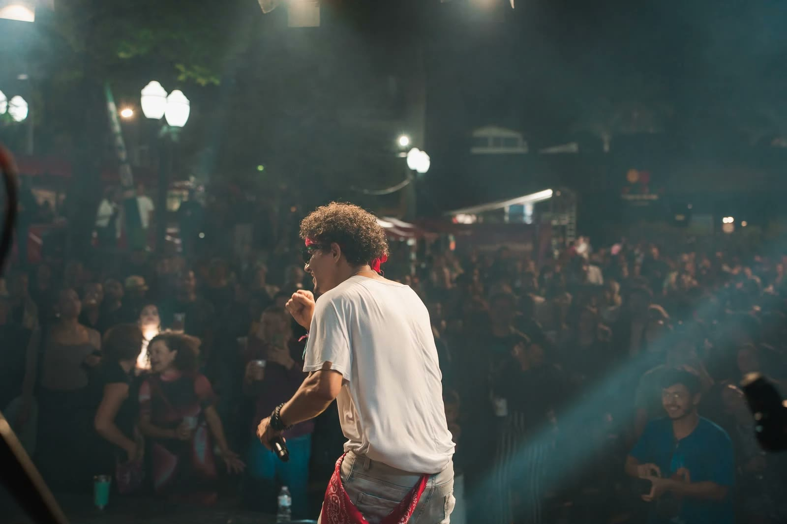

MOSI 2026
MOSI faz história em Itabira, conquista o público e abre caminho para novas edições
Primeira Mostra de Teatro de Rua de Itabira levou espetáculos, oficinas, cortejos, música, cultura popular e economia criativa às ruas, praças, escolas e espaços culturais da cidade
- Quando 14 a 20 de setembro de 2026
- Onde Praça do Pará, escolas e espaços culturais de Itabira
- Realização Instituto Alcântara, por meio da Lei Rouanet

Itabira viveu uma semana de intensa programação cultural com a primeira edição da MOSI — Mostra de Teatro de Rua de Itabira. Entre os dias 14 e 20 de setembro, o festival reuniu teatro, circo, dança, música, literatura, manifestações populares, oficinas, cortejos, bate-papos e uma Feira de Artesanato e Economia Criativa.
Realizada pelo Instituto Alcântara, por meio da Lei Rouanet, a mostra ofereceu toda a programação gratuitamente. As atividades passaram por escolas, instituições culturais e pela sede do Instituto. De 17 a 20 de setembro, a Praça Dr. Nelson Lima Guimarães, conhecida como Praça do Pará, tornou-se o principal ponto de encontro do festival.
Durante quatro dias, a praça recebeu crianças, jovens, adultos, pessoas idosas, famílias, artistas, artesãos e moradores de diferentes bairros. O público acompanhou os espetáculos, visitou a feira, participou das atividades e permaneceu no local até o encerramento da programação.
A abertura foi marcada pela chegada dos Marujos e Congados de Itabira, do bloco Olha o Palhaço no Meio da Rua e do Cortejo Xequeritas. Os grupos percorreram as ruas do bairro Pará e foram recebidos na praça pelo Grupo Tumbaitá.
Moradores acompanharam a passagem dos cortejos das calçadas, portas e janelas de suas casas. Tambores, cantos, figurinos e danças transformaram o trajeto em uma celebração da cultura popular de Itabira.
O encontro entre grupos tradicionais e artistas convidados foi um dos pontos altos da mostra. A proposta era receber produções de outras cidades sem deixar de reconhecer quem faz cultura no próprio território.
A diversidade também marcou a programação de espetáculos. O público acompanhou montagens de teatro, circo e dança, apresentações infantis, intervenções literárias, palhaçaria e shows musicais.


Entre as atrações esteve Chica, a Princesa Errante, espetáculo voltado ao público infantil e construído a partir de temas como liberdade, escolhas e coragem. A apresentação criou uma relação próxima com as crianças e transformou a praça em espaço de imaginação e descoberta.
A dança esteve representada por Motus, que levou para a rua uma apresentação baseada no movimento, na identidade e na expressão corporal.
Outro momento de grande participação foi o espetáculo Corações Trapezistas, apresentado pelo Circo do Sufoco, de Belo Horizonte. Inspirada nos circos tradicionais, a montagem contou a história de um avô e seu neto, reunindo comicidade, movimento e afeto.
As crianças acompanharam os artistas de perto, reagiram às cenas e participaram da apresentação. Depois do espetáculo, o Circo do Sufoco resumiu a passagem por Itabira: “Foi legal demais! Público lindo, evento sensacional”.
A música também ocupou o palco da MOSI. A apresentação de Priscila Tossan foi um dos momentos de maior envolvimento do público, que cantou junto e transformou a Praça do Pará em um grande coro.
Outras apresentações passaram pelo samba, pelo rock brasileiro e por diferentes estilos musicais, completando a programação e mantendo a praça ocupada durante as noites do festival.

Público aprova a primeira edição
Os depoimentos reunidos pela equipe de comunicação do Instituto Alcântara mostram que a primeira edição foi recebida com carinho pela população.
“Foi lindo ver a nossa cultura e raízes bem representadas”, afirmou Juliana Drummond.
Valdênia Efigênia também registrou sua impressão: “Que espetáculo! Parabéns, só pessoas encantadoras”.
Outras pessoas definiram a experiência com manifestações como “Maravilhoso!” e “Que lindo”. Também foram registrados pedidos para que a mostra volte a acontecer, demonstrando o desejo do público pela continuidade do festival.
A participação das famílias, o envolvimento das crianças, a presença dos moradores durante os cortejos e a permanência do público na praça confirmaram a boa recepção do projeto.
Oficinas aproximaram estudantes das artes cênicas
A MOSI começou antes da abertura dos espetáculos. As oficinas foram realizadas em escolas, instituições culturais e na sede do Instituto Alcântara.
As atividades abordaram práticas circenses, expressão corporal, máscaras, jogos teatrais, improvisação, criação de personagens e construção de cortejos.
Na oficina Circense, os participantes conheceram exercícios e técnicas relacionados ao universo do circo. A formação Corpo-Máscara trabalhou movimento, presença cênica e criação. Jogos e Personagens abordou improvisação e construção teatral. A oficina de Cortejo Teatral explorou a ocupação das ruas e a expressão coletiva.
As atividades permitiram que estudantes e moradores não apenas assistissem às apresentações, mas também conhecessem os processos de criação dos grupos.
Os bate-papos completaram a programação formativa. Artistas, produtores, gestores culturais e comunidade conversaram sobre criação, circulação artística, produção cultural e políticas públicas.
Feira movimentou artesãos e empreendedores
A Feira de Artesanato e Economia Criativa funcionou durante os quatro dias da programação cultural na Praça do Pará. O espaço reuniu associações, artesãos e expositores locais, que apresentaram e comercializaram seus produtos.
A presença da feira ampliou a experiência do público e aproximou o artesanato das demais atividades do festival.
A realização da MOSI também movimentou profissionais das áreas de produção cultural, comunicação, fotografia, audiovisual, transporte, hospedagem, alimentação, sonorização, iluminação, montagem e apoio técnico.
Artistas e equipes de outras cidades utilizaram serviços locais, gerando movimento para hotéis, restaurantes, transporte e comércio. O resultado reforça o papel da cultura na geração de trabalho, renda e oportunidades.
“A cultura movimenta profissionais, pequenos negócios e diferentes setores da cidade. Em um município minerado como Itabira, precisamos pensar em novos caminhos de desenvolvimento. A economia criativa faz parte desse processo”, afirma o diretor-presidente do Instituto Alcântara, Marcos Alcântara.
Uma semente para as artes cênicas
Ao fazer o balanço da primeira edição, Marcos destacou que a MOSI abriu um novo espaço para as artes cênicas em Itabira e na região do Médio Piracicaba.
“Plantamos uma semente importante. A música tem uma presença muito forte na nossa programação cultural e uma capacidade de transformação que ninguém questiona. Mas também precisamos ampliar o espaço do teatro, do circo, da dança, da literatura e das manifestações populares. A MOSI nasceu para reunir essas linguagens e levá-las para perto das pessoas”, afirma.
Segundo o diretor-presidente, Itabira possui uma riqueza cultural que precisa ser valorizada de forma permanente.
“Essa riqueza está nos congados, nas marujadas, nos grupos de teatro, nos artistas locais e em corpos culturais como o Tumbaitá. A MOSI colocou essas expressões em diálogo com grupos de outras cidades e permitiu que a população participasse gratuitamente.”
Marcos também destacou a importância de levar produções culturais para além das grandes cidades.
“Nem todas as famílias podem viajar para Belo Horizonte, Rio de Janeiro ou São Paulo para assistir a um espetáculo. A cultura precisa chegar às escolas, às ruas, às praças e aos bairros. Quando isso acontece de forma gratuita, mais pessoas passam a reconhecer a arte como parte de suas vidas.”
Público quer novas edições
O balanço do Instituto Alcântara é positivo. A população participou das oficinas, acompanhou os cortejos, prestigiou os espetáculos, visitou a feira e ocupou a praça durante a programação.
Os comentários e depoimentos recebidos durante e depois do festival mostraram que o público deseja a continuidade da MOSI. A avaliação é de que Itabira precisa receber mais iniciativas com programação gratuita, diversidade de linguagens e ocupação dos espaços públicos.
“Queremos uma Itabira que valorize seus artistas, sua memória e seu patrimônio. Uma cidade onde as pessoas possam ocupar as ruas e praças com cultura, convivência e alegria. A resposta do público mostrou que existe interesse e que a MOSI precisa continuar”, avalia Marcos.
O Instituto Alcântara já iniciou o trabalho de captação de recursos para a edição de 2027. A intenção é ampliar a programação, alcançar novos públicos e fortalecer a participação de artistas locais, regionais e nacionais.
Empresas e pessoas físicas poderão apoiar a próxima edição por meio da Lei Rouanet, observadas as condições previstas na legislação para a destinação de parte do Imposto de Renda devido a projetos culturais autorizados pelo Ministério da Cultura.
“A cultura não deve depender exclusivamente do poder público. As empresas e as pessoas físicas também podem contribuir. Ao incentivar um projeto cultural, a empresa participa do desenvolvimento do território, aproxima-se da comunidade e ajuda a manter uma programação gratuita e acessível”, explica Marcos.
A primeira edição aproximou artistas e comunidade, valorizou tradições, promoveu formação, movimentou a economia criativa e mostrou que existe público para as artes cênicas em Itabira.
O resultado e os pedidos por uma nova edição deixam para o Instituto Alcântara uma responsabilidade: trabalhar para que a MOSI volte em 2027 ainda maior.
Sobre o Instituto Alcântara
O Instituto Alcântara é uma associação civil sem fins econômicos, com sede em Itabira, Minas Gerais. A instituição atua nas áreas de cultura, educação, inclusão, memória, patrimônio, políticas públicas, economia criativa e desenvolvimento social, com atenção especial às cidades impactadas pela mineração.
Sua missão é promover a cultura como instrumento de transformação social e diversificação econômica, articulando formação, produção de conhecimento, participação comunitária e valorização das identidades locais.